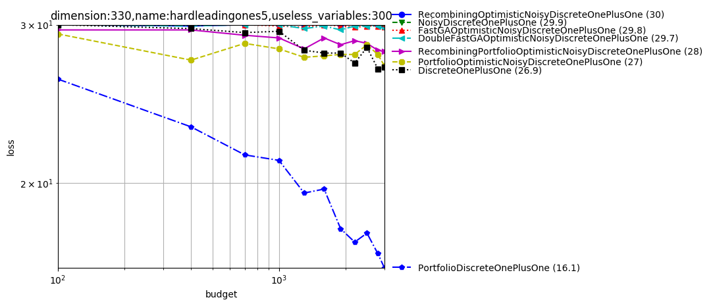

Examples of benchmarks¶
The following figures are examples of algorithm benchmarks which can be generated very easily from the platform In all examples, we use independent experiments for the different x-values; so that consistent rankings between methods, over several x-values, have a statistical meaning.
If you want to run the examples yourself, please make sure you have installed nevergrad with the benchmark flag (see here).
Noisy optimization¶
Created with command:
python -m nevergrad.benchmark noise --seed=12 --repetitions=10 --plot
Here the variance of the noise does not vanish near the optimum. TBPSA uses the noise management principles of pcCMSA-ES reaching fast convergence rates. We here compare it to a sample of our algorithms; but it performed very well also compared to many other methods.

One-shot optimization¶
In dimension-11 with one feature¶
Created with command:
python -m nevergrad.benchmark dim10_select_one_feature --seed=12 --repetitions=400 --plot
One-shot optimization is the case in which all evaluations should be done in parallel; the optimization algorithm can only decide, once and for all, which points are going to be evaluated. We consider here:
an optimum which is translated by a standard centered Gaussian;
1 useful variable and 10 useless variables (this is a feature selection context as in https://arxiv.org/abs/1706.03200);
the sphere function (restricted to the useful variable);
We see that:
Quasirandom without scrambling is suboptimal;
Cauchy sampling helps a lot (though the optimum is normally drawn!), in this feature selection context;
LHS performs equivalently to low discrepancy (which can be related to the fact that only one feature matters).

In dimension-12 with two features¶
We reproduce this experiment but with 2 useful variables:
python -m nevergrad.benchmark dim10_select_two_features --seed=12 --repetitions=400 --plot
LHS still performs very well, as well as scrambled methods; Cauchy is not that useful anymore.

In dimension-10 with small budget¶
With all variables useful, the situation becomes different; Cauchy is harmful. Scrambling is still very necessary. LHS (vanilla), which does not couple variables, is weak.
python -m nevergrad.benchmark dim10_smallbudget --seed=12 --repetitions=400 --plot

In dimension-4¶
In moderate dimension, scrambling is less necessary (consistently with theory) and LHS becomes weaker as budget increases (consistently with discrepancy results in https://arxiv.org/abs/1707.08481). The following plot was created with command:
python -m nevergrad.benchmark doe_dim4 --seed=12 --repetitions=400 --plot

Comparison-based methods for ill-conditioned problems¶
In this setting (rotated or not, ill-conditioned) we get excellent results with:
CMA, best on the Cigar and rotated ellipsoid;
DE and PSO when there is no rotation;
Almost rotationally invariant variants of DE in the rotated case (CR should not be exactly equal to 1, otherwise we stay in the vector space generated by the initial population; this confirms results and explanation in http://users.cecs.anu.edu.au/~ejmontgomery/publications/2010-07_de_cr_moves.pdf);
python -m nevergrad.benchmark compabasedillcond --seed=12 --repetitions=400 --plot
Ill-conditioned function¶
SQP (which won the BBComp GECCO 2015 contest) performs great in the quadratic case, consistently with theory and intuition:
python -m nevergrad.benchmark illcond --seed=12 --repetitions=50 --plot

Discrete¶
The platform can also deal with discrete objective functions! We can both consider discrete domains handled through softmax or through discretization of continuous variables.
python -m nevergrad.benchmark discrete --seed=12 --repetitions=10 --plot
We note that FastGA performs best. DoubleFastGA corresponds to a mutation rate ranging between 1/dim and (dim-1)/dim instead of 1/dim and 1/2; this is because the original range corresponds to a binary domain whereas we consider arbitrary domains. The simple uniform mixing of mutation rates (https://arxiv.org/abs/1606.05551) performs well in several cases.

List of benchmarks¶
You can find a list of currently available benchmarks below. Most are not well-documented, please open an issue when you need more information and we’ll update the documentation on demand ;)
-
nevergrad.benchmark.frozenexperiments.basic(seed: Optional[int] = None) → Iterator[nevergrad.benchmark.xpbase.Experiment]¶ Test settings
-
nevergrad.benchmark.frozenexperiments.compabasedillcond(seed: Optional[int] = None) → Iterator[nevergrad.benchmark.xpbase.Experiment]¶ All optimizers on ill cond problems
-
nevergrad.benchmark.frozenexperiments.dim10_select_one_feature(seed: Optional[int] = None) → Iterator[nevergrad.benchmark.xpbase.Experiment]¶
-
nevergrad.benchmark.frozenexperiments.dim10_select_two_features(seed: Optional[int] = None) → Iterator[nevergrad.benchmark.xpbase.Experiment]¶
-
nevergrad.benchmark.frozenexperiments.dim10_smallbudget(seed: Optional[int] = None) → Iterator[nevergrad.benchmark.xpbase.Experiment]¶
-
nevergrad.benchmark.frozenexperiments.doe_dim4(seed: Optional[int] = None) → Iterator[nevergrad.benchmark.xpbase.Experiment]¶
-
nevergrad.benchmark.frozenexperiments.illcond(seed: Optional[int] = None) → Iterator[nevergrad.benchmark.xpbase.Experiment]¶ All optimizers on ill cond problems
-
nevergrad.benchmark.frozenexperiments.metanoise(seed: Optional[int] = None) → Iterator[nevergrad.benchmark.xpbase.Experiment]¶
-
nevergrad.benchmark.frozenexperiments.noise(seed: Optional[int] = None) → Iterator[nevergrad.benchmark.xpbase.Experiment]¶ All optimizers on ill cond problems
-
nevergrad.benchmark.frozenexperiments.oneshot1(seed: Optional[int] = None) → Iterator[nevergrad.benchmark.xpbase.Experiment]¶ Comparing one-shot optimizers as initializers for Bayesian Optimization.
-
nevergrad.benchmark.frozenexperiments.oneshot2(seed: Optional[int] = None) → Iterator[nevergrad.benchmark.xpbase.Experiment]¶
-
nevergrad.benchmark.frozenexperiments.oneshot3(seed: Optional[int] = None) → Iterator[nevergrad.benchmark.xpbase.Experiment]¶
-
nevergrad.benchmark.frozenexperiments.oneshot4(seed: Optional[int] = None) → Iterator[nevergrad.benchmark.xpbase.Experiment]¶
-
nevergrad.benchmark.frozenexperiments.repeated_basic(seed: Optional[int] = None) → Iterator[nevergrad.benchmark.xpbase.Experiment]¶ Test settings
-
nevergrad.benchmark.frozenexperiments.small_discrete(seed: Optional[int] = None) → Iterator[nevergrad.benchmark.xpbase.Experiment]¶
-
class
nevergrad.benchmark.experiments.PackedFunctions(functions: List[nevergrad.functions.functionlib.ArtificialFunction], upper_bounds: numpy.ndarray)¶ -
copy() → nevergrad.benchmark.experiments.PackedFunctions¶ Provides a new equivalent instance of the class, possibly with different random initialization, to provide different equivalent test cases when using different seeds.
-
-
nevergrad.benchmark.experiments.alldes(seed: Optional[int] = None) → Iterator[nevergrad.benchmark.xpbase.Experiment]¶ All Bayesian optimization methods on various functions.
-
nevergrad.benchmark.experiments.arcoating(seed: Optional[int] = None) → Iterator[nevergrad.benchmark.xpbase.Experiment]¶ AR coating. Problems about optical properties of nanolayers.
-
nevergrad.benchmark.experiments.bragg_structure(seed: Optional[int] = None) → Iterator[nevergrad.benchmark.xpbase.Experiment]¶
-
nevergrad.benchmark.experiments.constrained_illconditioned_parallel(seed: Optional[int] = None) → Iterator[nevergrad.benchmark.xpbase.Experiment]¶ Many optimizers on ill cond problems with constraints.
-
nevergrad.benchmark.experiments.deceptive(seed: Optional[int] = None) → Iterator[nevergrad.benchmark.xpbase.Experiment]¶ Very difficult objective functions: one is highly multimodal (infinitely many local optima), one has an infinite condition number, one has an infinitely long path towards the optimum. Looks somehow fractal.
-
nevergrad.benchmark.experiments.doe(seed: Optional[int] = None) → Iterator[nevergrad.benchmark.xpbase.Experiment]¶ One shot optimization of 3 classical objective functions (sphere, rastrigin, cigar), simplified.
-
nevergrad.benchmark.experiments.double_o_seven(seed: Optional[int] = None) → Iterator[nevergrad.benchmark.xpbase.Experiment]¶
-
nevergrad.benchmark.experiments.far_optimum_es(seed: Optional[int] = None) → Iterator[nevergrad.benchmark.xpbase.Experiment]¶
-
nevergrad.benchmark.experiments.fastgames(seed: Optional[int] = None) → Iterator[nevergrad.benchmark.xpbase.Experiment]¶ Optimization of policies for games, namely direct policy search.
-
nevergrad.benchmark.experiments.fiveshots(seed: Optional[int] = None) → Iterator[nevergrad.benchmark.xpbase.Experiment]¶ One shot optimization of 3 classical objective functions (sphere, rastrigin, cigar)
-
nevergrad.benchmark.experiments.harderparallel(seed: Optional[int] = None) → Iterator[nevergrad.benchmark.xpbase.Experiment]¶ Parallel optimization on 3 classical objective functions.
-
nevergrad.benchmark.experiments.hdbo4d(seed: Optional[int] = None) → Iterator[nevergrad.benchmark.xpbase.Experiment]¶ All Bayesian optimization methods on various functions.
-
nevergrad.benchmark.experiments.illcondi(seed: Optional[int] = None) → Iterator[nevergrad.benchmark.xpbase.Experiment]¶ Testing optimizers on ill cond problems.
-
nevergrad.benchmark.experiments.illcondipara(seed: Optional[int] = None) → Iterator[nevergrad.benchmark.xpbase.Experiment]¶ Testing optimizers on ill-conditionned parallel optimization.
-
nevergrad.benchmark.experiments.images(seed: Optional[int] = None) → Iterator[nevergrad.benchmark.xpbase.Experiment]¶ AR coating. Problems about optical properties of nanolayers.
-
nevergrad.benchmark.experiments.manyobjective_example(seed: Optional[int] = None) → Iterator[nevergrad.benchmark.xpbase.Experiment]¶
-
nevergrad.benchmark.experiments.mlda(seed: Optional[int] = None) → Iterator[nevergrad.benchmark.xpbase.Experiment]¶ MLDA (machine learning and data analysis) testbed.
-
nevergrad.benchmark.experiments.mldakmeans(seed: Optional[int] = None) → Iterator[nevergrad.benchmark.xpbase.Experiment]¶ MLDA (machine learning and data analysis) testbed, restricted to the K-means part.
-
nevergrad.benchmark.experiments.mltuning(seed: Optional[int] = None, overfitter: bool = False) → Iterator[nevergrad.benchmark.xpbase.Experiment]¶
-
nevergrad.benchmark.experiments.multimodal(seed: Optional[int] = None, para: bool = False) → Iterator[nevergrad.benchmark.xpbase.Experiment]¶ Experiment on multimodal functions, namely hm, rastrigin, griewank, rosenbrock, ackley, lunacek, deceptivemultimodal.
-
nevergrad.benchmark.experiments.multiobjective_example(seed: Optional[int] = None) → Iterator[nevergrad.benchmark.xpbase.Experiment]¶
-
nevergrad.benchmark.experiments.naivemltuning(seed: Optional[int] = None) → Iterator[nevergrad.benchmark.xpbase.Experiment]¶ Counterpart of mltuning with overfitting of valid loss, i.e. train/valid/valid instead of train/valid/test.
-
nevergrad.benchmark.experiments.newdoe(seed: Optional[int] = None) → Iterator[nevergrad.benchmark.xpbase.Experiment]¶ One shot optimization of 3 classical objective functions (sphere, rastrigin, cigar), simplified. Tested on more dimensionalities than doe.
-
nevergrad.benchmark.experiments.noisy(seed: Optional[int] = None) → Iterator[nevergrad.benchmark.xpbase.Experiment]¶ Noisy optimization methods on a few noisy problems.
-
nevergrad.benchmark.experiments.oneshot(seed: Optional[int] = None) → Iterator[nevergrad.benchmark.xpbase.Experiment]¶ One shot optimization of 3 classical objective functions (sphere, rastrigin, cigar)
-
nevergrad.benchmark.experiments.paraalldes(seed: Optional[int] = None) → Iterator[nevergrad.benchmark.xpbase.Experiment]¶ All Bayesian optimization methods on various functions. Parallel version.
-
nevergrad.benchmark.experiments.parahdbo4d(seed: Optional[int] = None) → Iterator[nevergrad.benchmark.xpbase.Experiment]¶ All Bayesian optimization methods on various functions. Parallel version.
-
nevergrad.benchmark.experiments.parallel(seed: Optional[int] = None) → Iterator[nevergrad.benchmark.xpbase.Experiment]¶ Parallel optimization on 3 classical objective functions.
-
nevergrad.benchmark.experiments.paramultimodal(seed: Optional[int] = None) → Iterator[nevergrad.benchmark.xpbase.Experiment]¶ Parallel counterpart of the multimodal experiment.
-
nevergrad.benchmark.experiments.photonics(seed: Optional[int] = None) → Iterator[nevergrad.benchmark.xpbase.Experiment]¶
-
nevergrad.benchmark.experiments.powersystems(seed: Optional[int] = None) → Iterator[nevergrad.benchmark.xpbase.Experiment]¶ Unit commitment problem, i.e. management of dams for hydroelectric planning.
-
nevergrad.benchmark.experiments.powersystemssplit(seed: Optional[int] = None) → Iterator[nevergrad.benchmark.xpbase.Experiment]¶ Unit commitment problem, i.e. management of dams for hydroelectric planning. Bigger budget than the powersystems problem.
-
nevergrad.benchmark.experiments.ranknoisy(seed: Optional[int] = None) → Iterator[nevergrad.benchmark.xpbase.Experiment]¶ Noisy optimization methods on a few noisy problems.
-
nevergrad.benchmark.experiments.realworld(seed: Optional[int] = None) → Iterator[nevergrad.benchmark.xpbase.Experiment]¶ Realworld optimization. This experiment contains: - a subset of MLDA (excluding the perceptron: 10 functions rescaled or not. - ARCoating https://arxiv.org/abs/1904.02907: 1 function. - The 007 game: 1 function, noisy. - PowerSystem: a power system simulation problem. - STSP: a simple TSP problem. MLDA stuff, except the Perceptron.
-
nevergrad.benchmark.experiments.sequential_fastgames(seed: Optional[int] = None) → Iterator[nevergrad.benchmark.xpbase.Experiment]¶ Optimization of policies for games, namely direct policy search.
-
nevergrad.benchmark.experiments.simpletsp(seed: Optional[int] = None) → Iterator[nevergrad.benchmark.xpbase.Experiment]¶ Simple TSP problems. Please note that the methods we use could be applied or complex variants, whereas specialized methods can not always do it; therefore this comparisons from a black-box point of view makes sense even if white-box methods are not included though they could do this more efficiently.
-
nevergrad.benchmark.experiments.spsa_benchmark(seed: Optional[int] = None) → Iterator[nevergrad.benchmark.xpbase.Experiment]¶ Some optimizers on a noisy optimization problem. This benchmark is based on the noise benchmark.
-
nevergrad.benchmark.experiments.wide_discrete(seed: Optional[int] = None) → Iterator[nevergrad.benchmark.xpbase.Experiment]¶
-
nevergrad.benchmark.experiments.yabbob(seed: Optional[int] = None, parallel: bool = False, big: bool = False, small: bool = False, noise: bool = False, hd: bool = False) → Iterator[nevergrad.benchmark.xpbase.Experiment]¶ Yet Another Black-Box Optimization Benchmark. Related to, but without special effort for exactly sticking to, the BBOB/COCO dataset.
-
nevergrad.benchmark.experiments.yabigbbob(seed: Optional[int] = None) → Iterator[nevergrad.benchmark.xpbase.Experiment]¶ Counterpart of yabbob with more budget.
-
nevergrad.benchmark.experiments.yahdbbob(seed: Optional[int] = None) → Iterator[nevergrad.benchmark.xpbase.Experiment]¶ Counterpart of yabbob with higher dimensions.
-
nevergrad.benchmark.experiments.yanoisybbob(seed: Optional[int] = None) → Iterator[nevergrad.benchmark.xpbase.Experiment]¶ Noisy optimization counterpart of yabbob. This is supposed to be consistent with normal practices in noisy optimization: we distinguish recommendations and exploration. This is different from the original BBOB/COCO from that point of view.
-
nevergrad.benchmark.experiments.yaparabbob(seed: Optional[int] = None) → Iterator[nevergrad.benchmark.xpbase.Experiment]¶ Parallel optimization counterpart of yabbob.
-
nevergrad.benchmark.experiments.yasmallbbob(seed: Optional[int] = None) → Iterator[nevergrad.benchmark.xpbase.Experiment]¶ Counterpart of yabbob with less budget.
-
nevergrad.benchmark.experiments.yawidebbob(seed: Optional[int] = None) → Iterator[nevergrad.benchmark.xpbase.Experiment]¶ Yet Another Wide Black-Box Optimization Benchmark. The goal is basically to have a very wide family of problems: continuous and discrete, noisy and noise-free, mono- and multi-objective, constrained and not constrained, sequential and parallel.